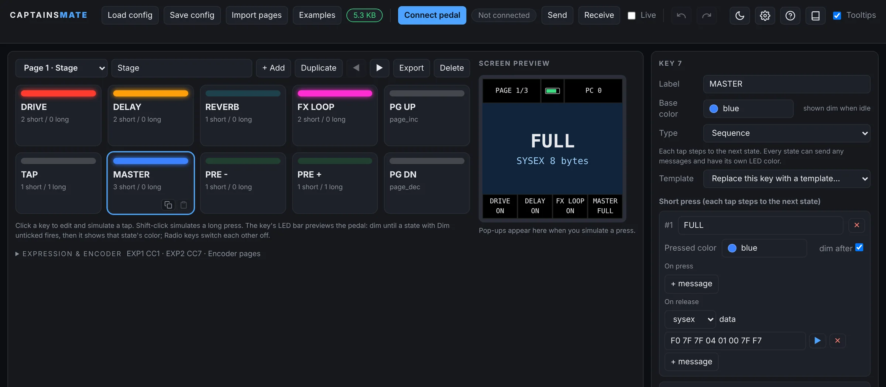
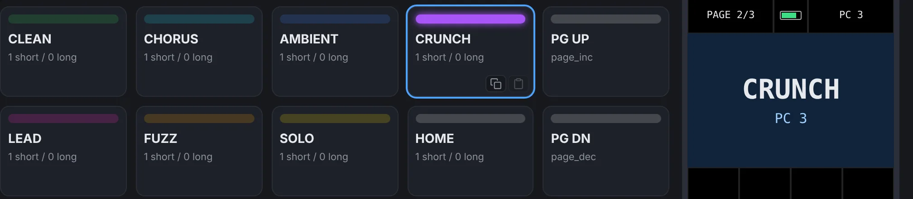
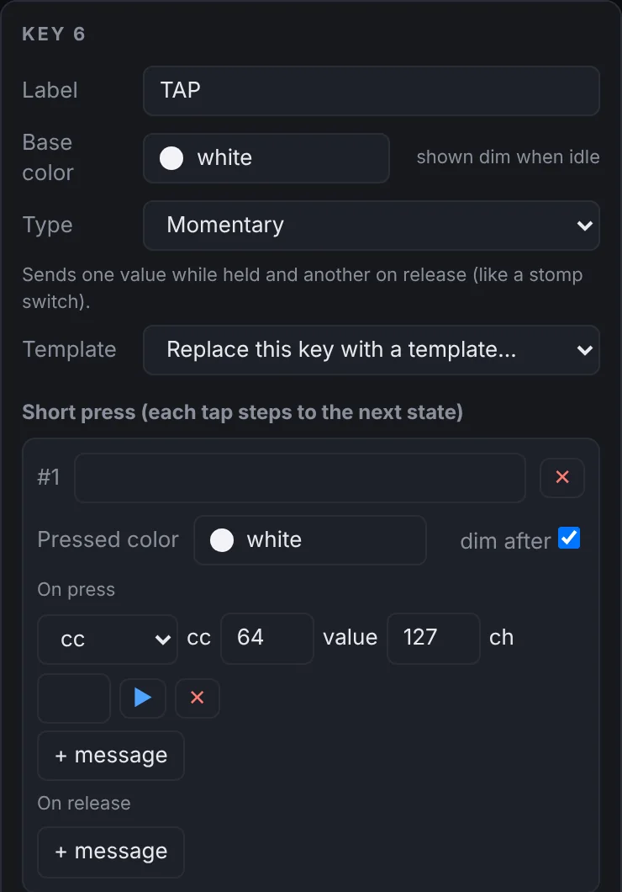
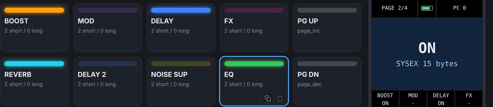
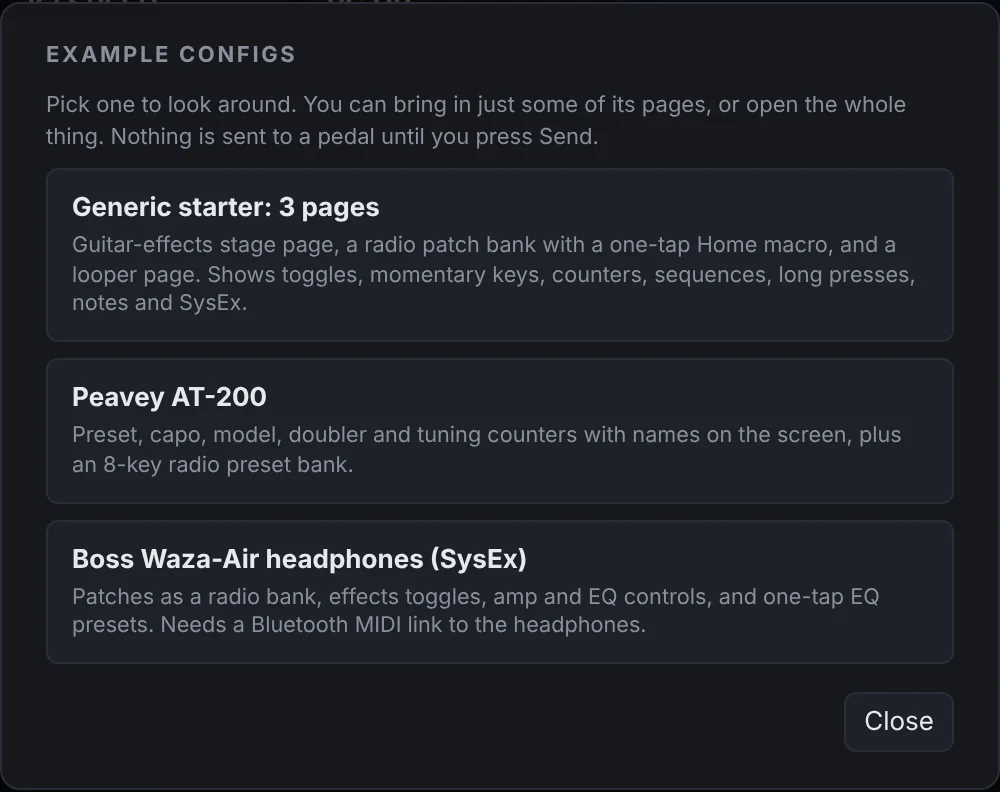
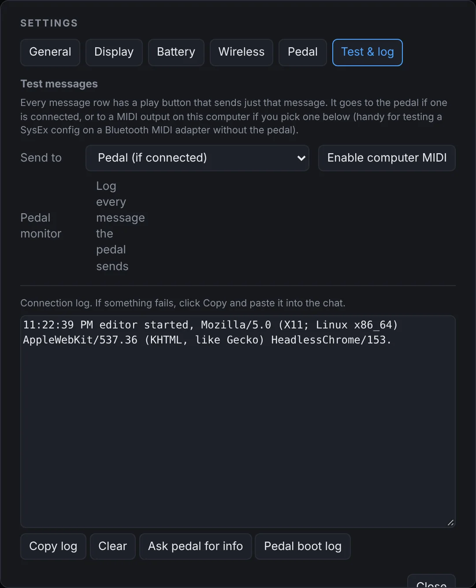
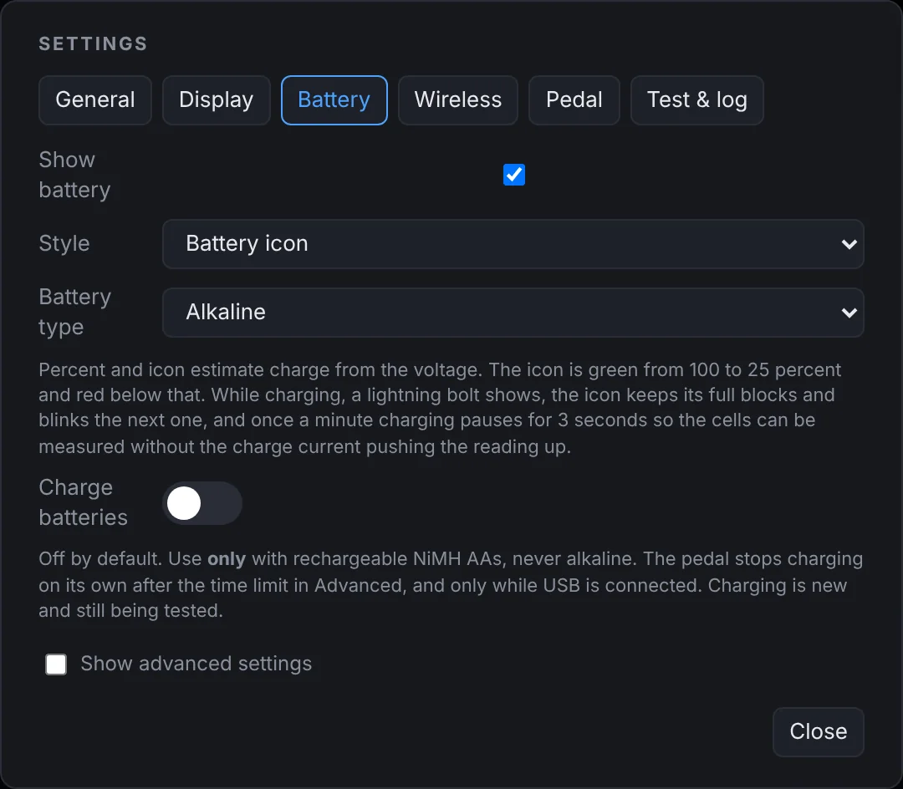
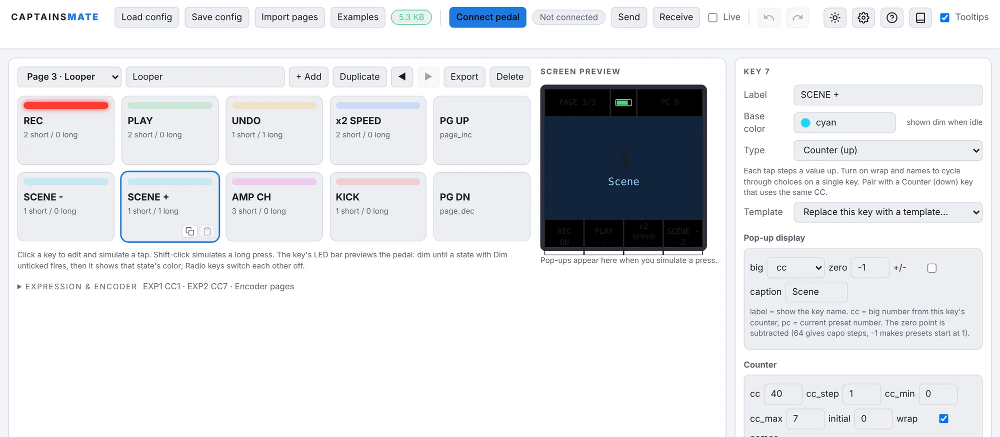
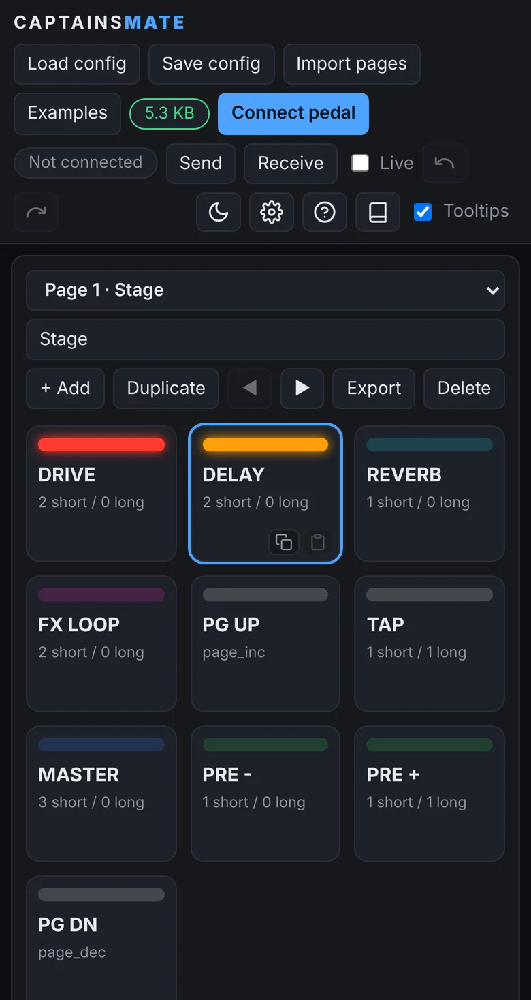

CaptainsMate is a point-and-click editor and a small custom firmware for the PaintAudio MIDI Captain 10 STD. Lay out your pages, press Send, and the pedal changes on the spot. No config files to hand-edit, no ejecting the drive, no reboot.
Free and open source under the MIT licence. The emulator runs in any modern browser with no pedal attached. Connecting a real pedal over USB needs Chrome or Edge on a computer.
Step on it. Tap a switch, hold TAP for the tuner, or use 1 to 0 on your keyboard.
Your pages sit on the left, the ten keys and a live preview of the pedal's screen in the middle, and everything about the selected key on the right. Click any key to simulate a tap, Shift-click for a long press, and watch the LEDs and the screen react exactly as they will under your foot.

The editor talks to the pedal over the same USB cable that powers it. Send pushes your changes and the pedal saves them itself. Receive pulls the pedal's setup back into the editor. Tick Live and every edit goes across as you make it.
The editor is a single web page. Open it, connect, done. It also works as a test emulator with no pedal at all, so you can build a whole rig on the train and send it when you get home.
A size chip shows how big your config is, and once connected, how much memory the pedal has free. You find out a page is too big in the editor, not halfway through a gig.
The MIDI Captain is a great little foot controller. CaptainsMate makes it painless to tell it what to do, on stage, in the studio or at the practice space.
Ten keys is never enough, so make as many pages as you like and flip between them with page keys or the encoder wheel. Every key glows dimly in its own color, so you can read the pedal from across the stage.

Every key can do one thing on a tap and something else on a long press. Tap for tap tempo, hold for the tuner. Tap for the next scene, hold to jump back to the first. Tap to undo, hold to clear the loop.

Control Change for the knobs and switches on most gear, Program Change and preset up and down for recalling sounds, notes with velocity for drum pads and samplers. When a CC can't reach something, type the SysEx bytes in hex and the pedal sends them as they are.
Set one MIDI channel for the whole pedal, or override it on any single message so one pedal can drive several devices.

Open Examples and pick one to see what a full setup looks like. The starter is a three-page board: a stage page, a radio patch bank with a one-tap Home key, and a looper page with named scene counters and an amp-channel sequence.
There are gear-specific configs too. One drives the Peavey AT-200 with named capo, model, doubler and tuning counters. Another controls Boss Waza-Air headphones entirely over SysEx, and makes a good model for any SysEx device.

Every message has its own play button that sends just that message, either through the pedal or straight to a MIDI port on your computer. That makes it quick to find the one SysEx string your gear actually answers to.
Turn on the pedal monitor to see every message the pedal sends as you stomp, and use the log to ask the pedal what it's doing when something doesn't add up.

Global settings live in one tidy panel: the MIDI channel, how long a long press is, how bright idle LEDs glow, and how bright the screen is. For dark stages the screen can fade down after a few quiet seconds and snap back the moment you touch a key.
The battery can show as a voltage, a percentage or an icon. If you run rechargeable NiMH cells, the pedal can charge them over USB, with a time limit and regular pauses for an honest reading. Charging is off by default and still being tested.

Give each footswitch a personality. Each type can respond to a tap and to a long press, which you can time to your own foot.
Sends one value while your foot is down and another when you lift.
A reverb swell only while held, a solo boost, freeze or whammy, a sustain pedal.
Each tap flips it on and off, and the LED changes to match.
Drive, delay, the FX loop, a compressor, anything you set and forget.
A pick-one group. Pressing a key lights it and dims the others in its group.
Banks of presets or patches, amp or scene selectors.
Steps a value up or down, can wrap around, and can show a name for each value on the screen.
Scenes and snapshots, bank select, volume in steps.
Each tap moves to the next state, and every state sends its own messages and shows its own color.
Channel cycling, delay subdivisions, walking through the parts of a song.
Jumps to the next or previous page of ten keys.
Separate pages for the stage, the looper and the setlist.


The editor follows your system theme, or you can pick light or dark from the top bar. It reflows for small screens too, so you can sketch a page on your phone in the emulator and send it to the pedal from your computer later.
CaptainsMate runs on CircuitPython 7.3.1. If your pedal already runs CircuitPython, setup takes a few minutes.
Hold switch 1 while powering on, and copy everything from the MIDICAPTAIN drive to a safe folder.
Put code.py, boot.py and config.json from the repo's firmware folder onto the drive, then restart the pedal.
Open the editor in Chrome or Edge, click Connect pedal and pick its serial port. The editor reads what's on it.
Change something, click Send, and step on the key. You'll rarely need the USB drive again.
No code.py or lib folder on your drive? Your pedal may need CircuitPython flashed first, which is the riskier route. The install guide on GitHub covers it, along with where to get CircuitPython 7.3.1.
The emulator is the full editor. Load an example, press some keys and see if it fits the way you play.